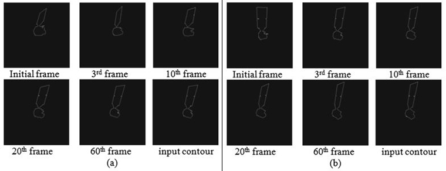

|
[New]
Robust Spacecraft Component Detection in Point Clouds
Quanmao Wei, Zhiguo Jiang and Haopeng Zhang
Sensors, 2018
PDF
Abstract
BibTeX
Supplementary
Automatic component detection of spacecraft can assist in on-orbit operation and space situational awareness. Spacecraft are generally composed of solar panels and cuboidal or cylindrical modules. These components can be simply represented by geometric primitives like plane, cuboid and cylinder. Based on this prior, we propose a robust automatic detection scheme to automatically detect such basic components of spacecraft in three-dimensional (3D) point clouds. In the proposed scheme, cylinders are first detected in the iteration of the energy-based geometric model fitting and cylinder parameter estimation. Then, planes are detected by Hough transform and further described as bounded patches with their minimum bounding rectangles. Finally, the cuboids are detected with pair-wise geometry relations from the detected patches. After successive detection of cylinders, planar patches and cuboids, a mid-level geometry representation of the spacecraft can be delivered. We tested the proposed component detection scheme on spacecraft 3D point clouds synthesized by computer-aided design (CAD) models and those recovered by image-based reconstruction, respectively. Experimental results illustrate that the proposed scheme can detect the basic geometric components effectively and has fine robustness against noise and point distribution density.
@article{weiSensors18,
author = {Quanmao Wei and Zhiguo Jiang and Haopeng Zhang},
title = {Robust Spacecraft Component Detection in Point Clouds},
journal = {Sensors},
volume = {18},
year = {2018},
number = {4},
article number = {933},
url = {http://www.mdpi.com/1424-8220/18/4/933},
issn = {1424-8220},
doi = {10.3390/s18040933}
}
|
|
[New]
Vision-based Pose Estimation for Textureless Space Objects by Contour Points Matching
Xin Zhang, Zhiguo Jiang, Haopeng Zhang and Quanmao Wei
TAES, 2018
Preprint
Abstract
BibTeX
This paper presents a novel vision-based method to solve the 6-degree-of-freedom pose estimation problem of textureless space objects from a single monocular image. Our approach follows a coarse-to-fine procedure, utilizing only shape and contour information of the input image. To achieve invariance to initialization, we select a series of projection images which are similar to the input image and establish many-to-one 2D-3D correspondences by contour feature matching. Intensive attention is focused on outlier rejection and we introduce an innovative strategy to fully utilize geometric matching information to guide pose calculation. Experiments based on simulated images are carried out, and the results manifest that pose estimation error of our approach is about 1% even in situations with heavy outlier correspondences.
@article{zhangTAES18,
author = {Xin Zhang and Zhiguo Jiang and Haopeng Zhang and Quanmao Wei},
journal = {IEEE Transactions on Aerospace and Electronic Systems},
title = {Vision-based Pose Estimation for Textureless Space Objects
by Contour Points Matching},
year = {2018},
month = {},
volume = {PP},
number = {99},
pages = {1-1},
issn = {0018-9251},
doi = {10.1109/TAES.2018.2815879}
}
|
|
3D Reconstruction of Space Objects from Multi-Views by a Visible Sensor
Haopeng Zhang, Quanmao Wei and Zhiguo Jiang
Sensors, 2017
PDF
Abstract
BibTeX
In this paper, a novel 3D reconstruction framework is proposed to recover the 3D structural model of a space object from its multi-view images captured by a visible sensor. Given an image sequence, this framework first estimates the relative camera poses and recovers the depths of the surface points by the structure from motion (SFM) method, then the patch-based multi-view stereo (PMVS) algorithm is utilized to generate a dense 3D point cloud. To resolve the wrong matches arising from the symmetric structure and repeated textures of space objects, a new strategy is introduced, in which images are added to SFM in imaging order. Meanwhile, a refining process exploiting the structural prior knowledge that most sub-components of artificial space objects are composed of basic geometric shapes is proposed and applied to the recovered point cloud. The proposed reconstruction framework is tested on both simulated image datasets and real image datasets. Experimental results illustrate that the recovered point cloud models of space objects are accurate and have a complete coverage of the surface. Moreover, outliers and points with severe noise are effectively filtered out by the refinement, resulting in an distinct improvement of the structure and visualization of the recovered points.
@article{zhangSensors17,
author = {Haopeng Zhang and Quanmao Wei and Zhiguo Jiang},
title = {3D Reconstruction of Space Objects from Multi-Views by a Visible Sensor},
journal = {Sensors},
volume = {17},
year = {2017},
number = {7},
article number = {1689},
url = {http://www.mdpi.com/1424-8220/17/7/1689},
issn = {1424-8220},
doi = {10.3390/s17071689}
}
|

|
Spacecraft component detection in point clouds
Quanmao Wei, Zhiguo Jiang, Haopeng Zhang and Nie Shanlan
IGTA, 2017
PDF
Abstract
BibTeX
Component detection of spacecraft is significant for on-orbit operation and space situational awareness. Solar wings and main body are the major components of most spacecrafts, and can be described by geometric primitives like planes, cuboid or cylinder. Based on this prior, pipeline to automatically detect the basic components of spacecraft in 3D point clouds is presented, in which planes, cuboid and cylinder are successively detected. The planar patches are first detected as possible solar wings in point clouds of the recorded object. As for detection of the main body, inferring a cuboid main body from the detected patches is first attempted, and a further attempt to extract a cylinder main body is made if no cuboid exists. Dimensions are estimated for each component. Experiments on satellite point cloud data that are recovered by image-based reconstruction demonstrated effectiveness and accuracy of this pipeline.
@inproceedings{weiIGTA17,
author = {Quanmao Wei and Zhiguo Jiang and Haopeng Zhang and Shanlan Nie},
editor = {Yongtian Wang and Shengjin Wang and Yue Liu and Jian Yang
and Xiaoru Yuan and Ran He and Henry Been-Lirn Duh},
title = {Spacecraft Component Detection in Point Clouds},
booktitle = {Advances in Image and Graphics Technologies},
year = {2017},
publisher = {Springer Singapore},
address = {Singapore},
pages = {210--218},
isbn = {978-981-10-7389-2}
}
|

|
Pose Estimation of Space Objects Based on Hybrid Feature Matching of Contour Points
Xin Zhang, Haopeng Zhang, Quanmao Wei and Zhiguo Jiang
IGTA, 2016
PDF
Abstract
BibTeX
This paper presents an improved pose estimation algorithm for vision-based space objects. The major weakness of most existing methods is limited convergence radius. In most cases they ignore the influence of translation, only focusing on rotation parameters. To breakthrough these limits, we utilizes hybrid local image features to explicitly establish 2D-3D correspondences between the input image and 3D model of space objects, and then estimate rotation and translation parameters based on the correspondences. Experiments with simulated models are carried out, and the results show that our algorithm can successfully estimate the pose of space objects with large convergence radius and high accuracy.
@inproceedings{zhangIGTA16,
author = {Xin Zhang and Haopeng Zhang and Quanmao Wei and Zhiguo Jiang},
editor = {Tieniu Tan and Guoping Wang and Shengjin Wang and Yue Liu
and Xiaoru Yuan and Ran He and Sheng Li},
title = {Pose Estimation of Space Objects Based on Hybrid Feature Matching
of Contour Points},
booktitle = {Advances in Image and Graphics Technologies},
year = {2016},
publisher = {Springer Singapore},
address = {Singapore},
pages = {184--191},
isbn = {978-981-10-2260-9}
}
|
|
Sequential-image-based Space Object 3D Reconstruction
Haopeng Zhang, Quanmao Wei, Wei Zhang, Junfeng Wu and Zhiguo Jiang
JBUAA, 2016 [In Chinese]
PDF
Abstract
BibTeX
Space object 3D reconstruction is of important significance for both space situational awareness and theoretical study. A new structure from motion method was proposed to avoid the reconstruction error caused by the symmetrical structure and similar texture of space targets. In this method, new images were added sequentially for reconstruction using the imaging time as a priori knowledge. In addition, image simulation of space target and ground imaging simulation experiment were carried out for the lack of space target image data. And experiments on the simulated space target images, in which the motion analysis results are accurate and robust to noise, and the recovery 3D point cloud can express the structural information of the target to a certain extent, have demonstrated the effectiveness of the approach proposed, and the boundary conditions of multi-frame-image for 3D reconstruction are acquired as well.
@article{zhangJBUAA16,
language = {Chinse},
author = {Haopeng Zhang and Quanmao Wei and Wei Zhang and Junfeng Wu and Zhiguo Jiang},
title = {Sequential-image-based Space Object 3D Reconstruction},
journal = {Journal of Beijing University of Aeronautics and Astronautics},
year = {2016},
volume = {42},
number = {2},
pages = {273--279},
issn = {10015965},
URL = {http://dx.doi.org/10.13700/j.bh.1001-5965.2015.0117}
}
|
|